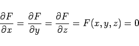
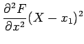
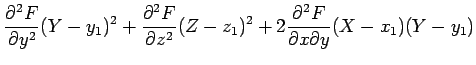
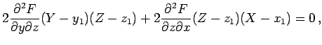

Inhalt Index DeskTop Bronstein

 Geometrie Differentialgeometrie Flächen Tangentialebene und Flächennormale
Geometrie Differentialgeometrie Flächen Tangentialebene und Flächennormale


Wenn für einen Flächenpunkt mit den Koordinaten x =x1, y =y1, z =z1 und der Gleichung F(x,y,z) =0 (3.509) gleichzeitig die Beziehungen
|  | (3.521) |
erfüllt sind, d.h. wenn die Ableitungen 1. Ordnung verschwinden, dann ist der Punkt P(x1,y1,z1) ein singulärer Punkt oder Kegelpunkt. Alle Tangenten, die durch ihn verlaufen, liegen nicht in einer Ebene, sondern bilden einen Kegel zweiter Ordnung mit der Gleichung
|  | + |  | |
| + |  | (3.522) |